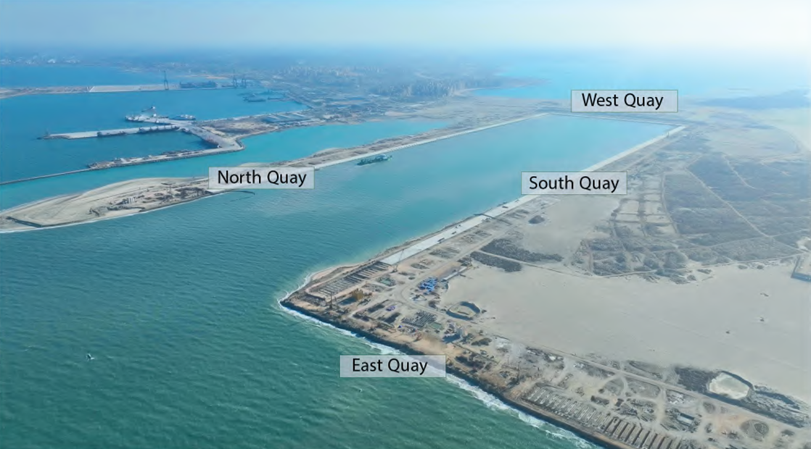
Abo-Qir Port Expansion
Expansion of Abu Qir Military Port to increase its capacity, including new quay walls, breakwaters, reclamation and dredging works.
View detailsCMC project portfolio — marine, coastal, civil, structural and architectural engineering projects.

Expansion of Abu Qir Military Port to increase its capacity, including new quay walls, breakwaters, reclamation and dredging works.
View details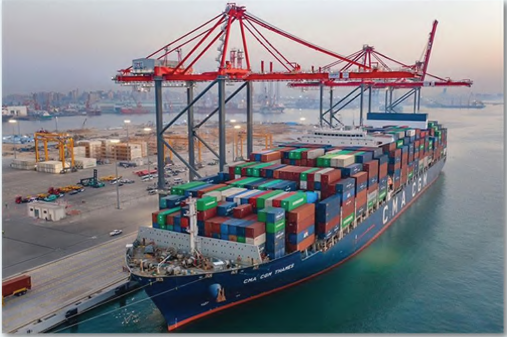
Tahya Misr is a multi-purpose terminal at Alexandria Port and one of Egypt’s major maritime transport terminals.
View details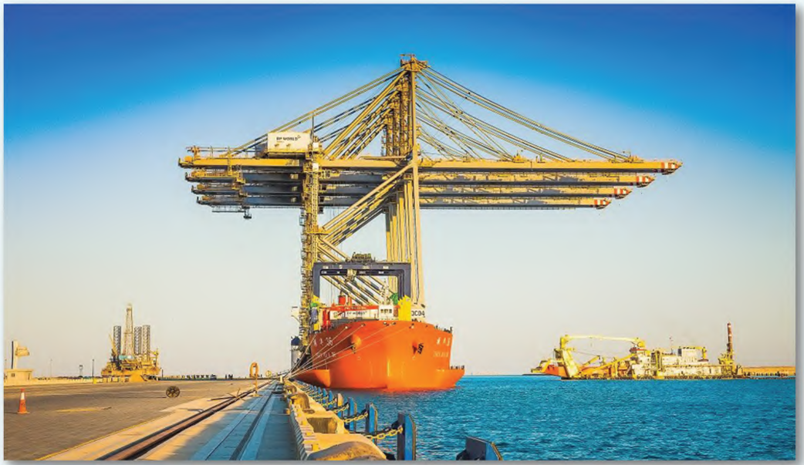
Development of composite-section quay walls and associated port infrastructure for Ain Sokhna Port basins.
View details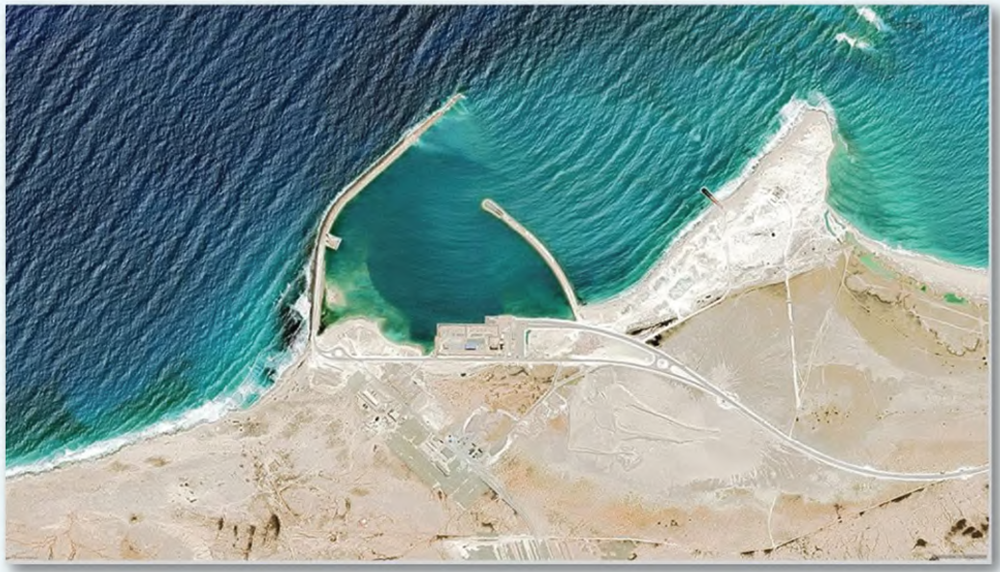
Marine infrastructure comprising a breakwater and quay wall intended to support supply of components and materials for the new nuclear reactor.
View details.PNG)
Development of Area 4 into a multi-purpose and cargo terminal with new quay walls and reclaimed land.
View details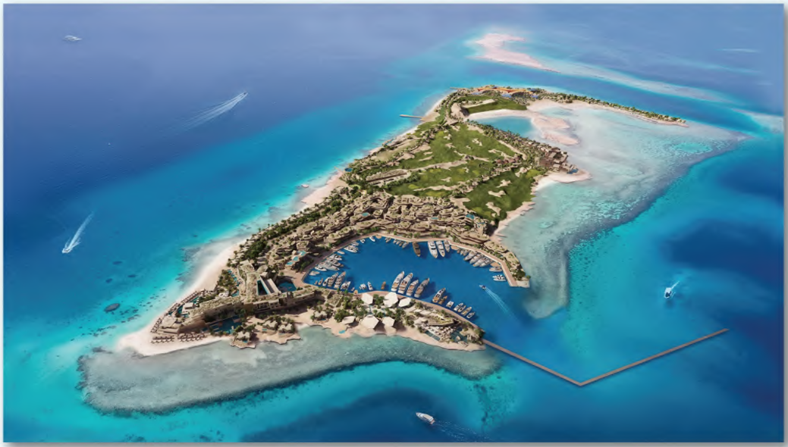
A steel platform serving as a construction supply route and a floating breakwater for the Sindalah development.
View details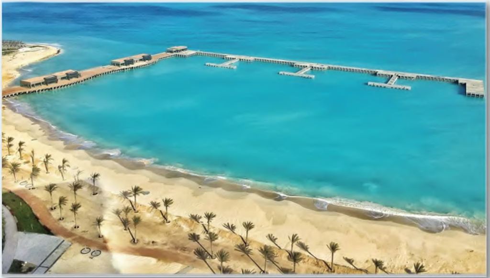
Large marine platform supported by piles and designed for restaurants, visitor walkways, yacht mooring and marine services.
View details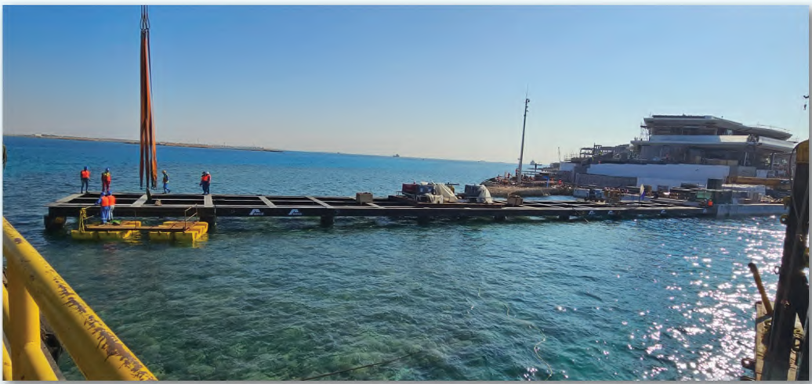
Temporary piled jetty for construction materials, equipment and personnel during the early works of Shushah Island.
View details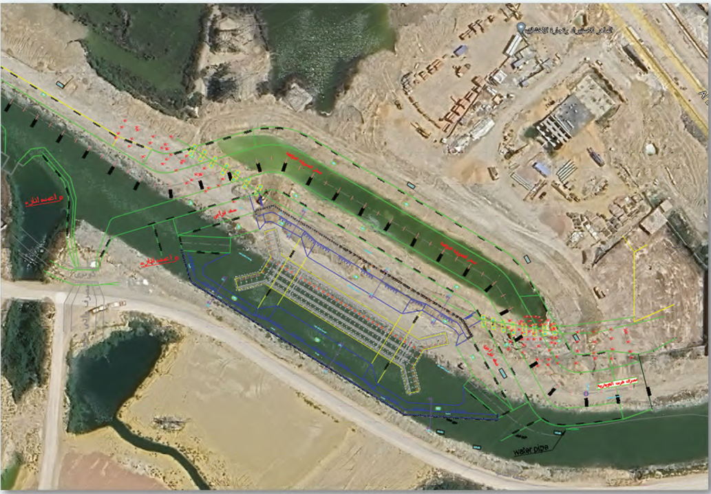
Syphon designed to carry flow beneath the main stream of the New Delta Channel.
View details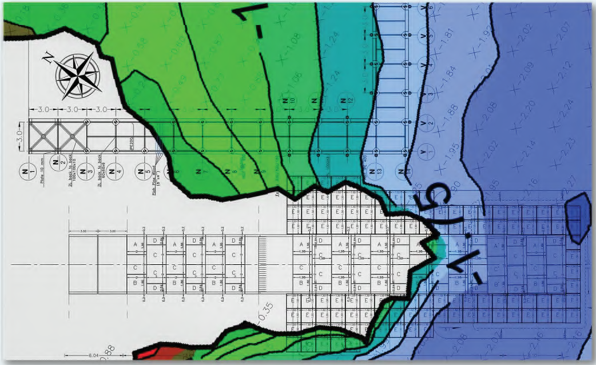
Marine infrastructure project involving slipway construction and a marine platform.
View details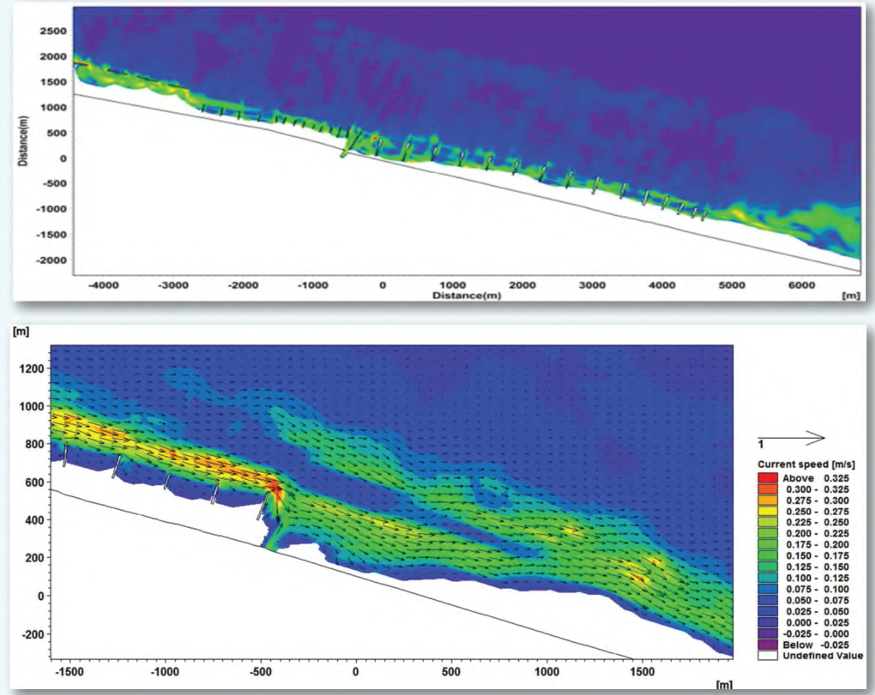
Environmental and hydrodynamic study of shoreline behavior and seabed change.
View details.PNG)
Pedestrian beach marina intended to add recreational activities while also contributing to shoreline protection as a suspended breakwater.
View details.PNG)
Coastal protection project involving a breakwater and marine platform.
View details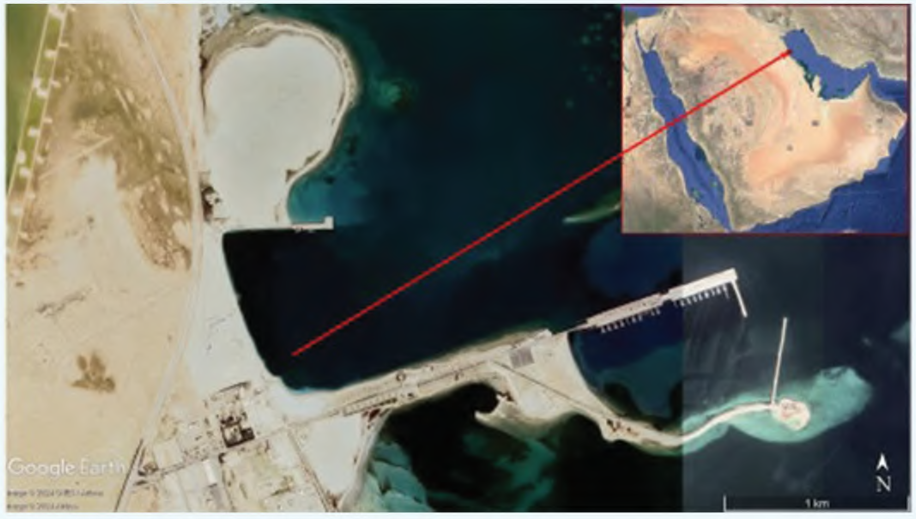
Development of marine facilities including piers, slipways, a synchrolift and floating pontoons.
View details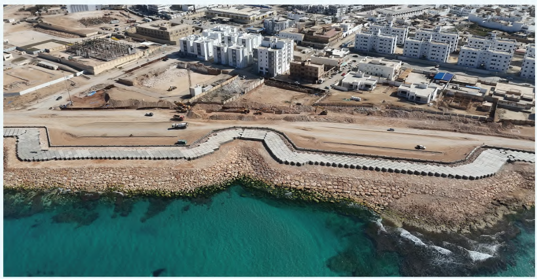
Coastal and infrastructure works involving valley retaining walls and shoreline protection.
View details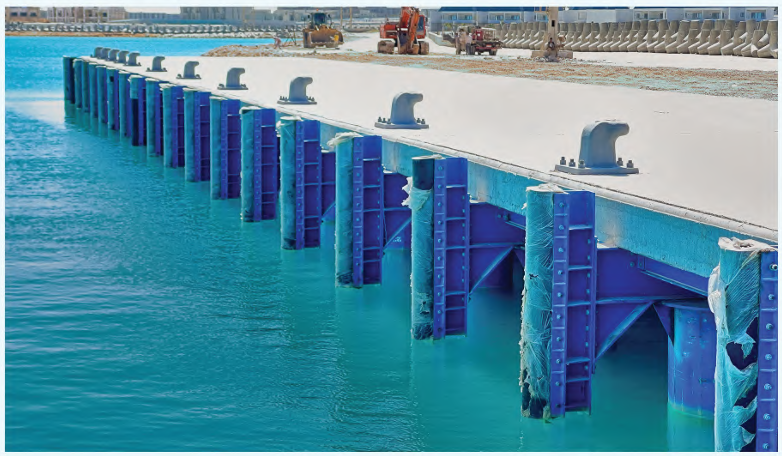
Service jetty supporting construction supply for Alamein islands and intended for future marine transportation.
View details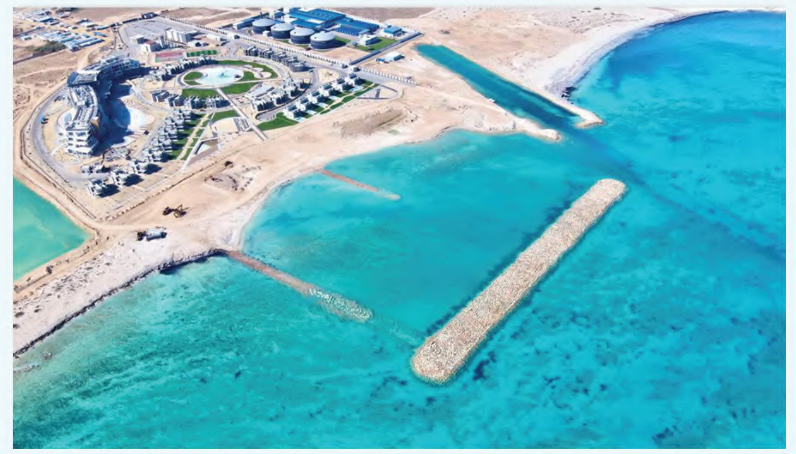
Coastal protection scheme for the hotel shoreline using groynes and a submerged breakwater.
View details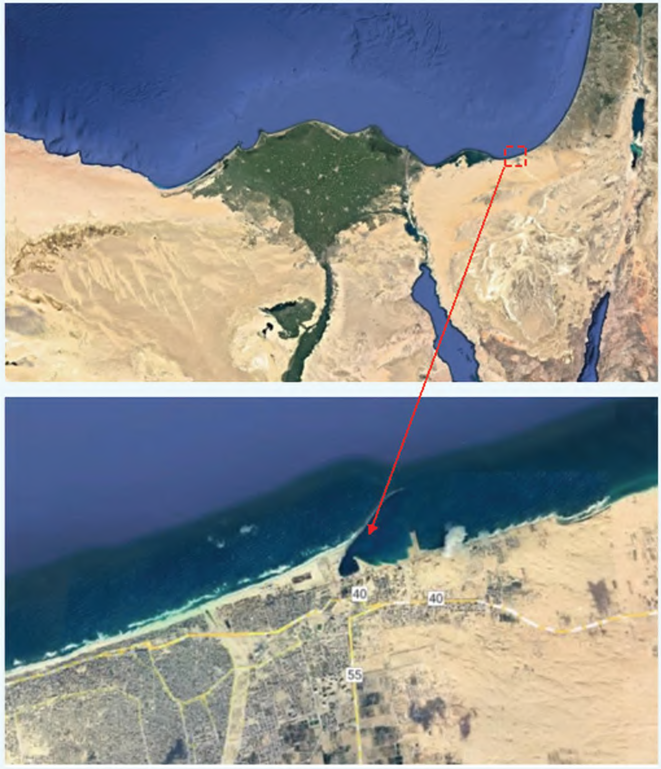
Planning and development of El-Arish Port for the Suez Canal Economic Zone.
View details![Marsa Matrouh Naval Base [Gargoub Base]](assets/images/Marsa_Matrouh_Naval_Base[Gargoub Base].PNG)
Large naval-base development with more than 70 buildings, marine platforms and a floating breakwater.
View details![Sawary [40 West], Alexandria](assets/images/Sawary[40 West],Alexandria.PNG)
Large mixed-use development involving hotel/apartment structures, shoring and CFA piling works.
View details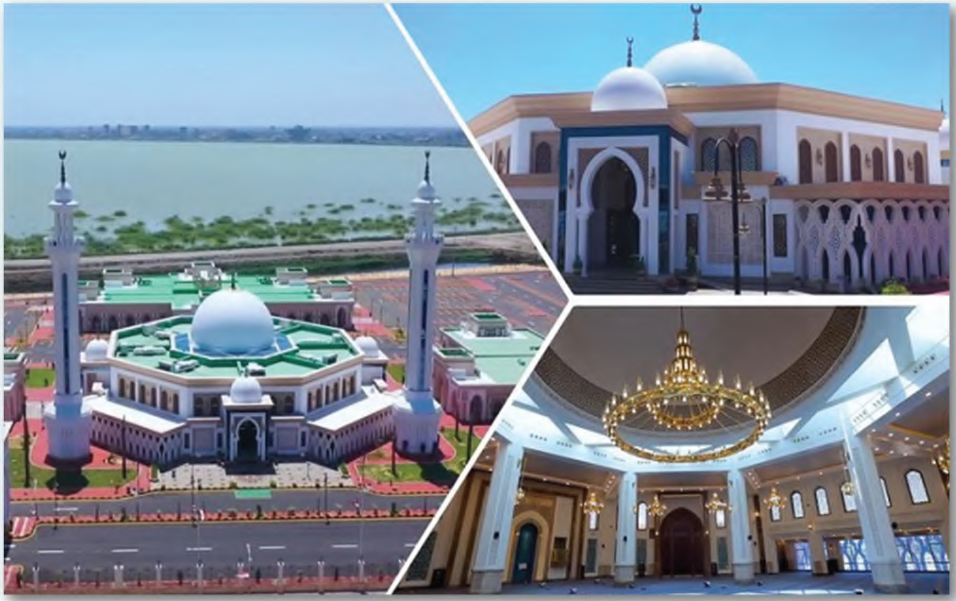
Large mosque and community facility on approximately 10.4 acres with a 2,135 m² main building and capacity for about 1,800 worshippers.
View details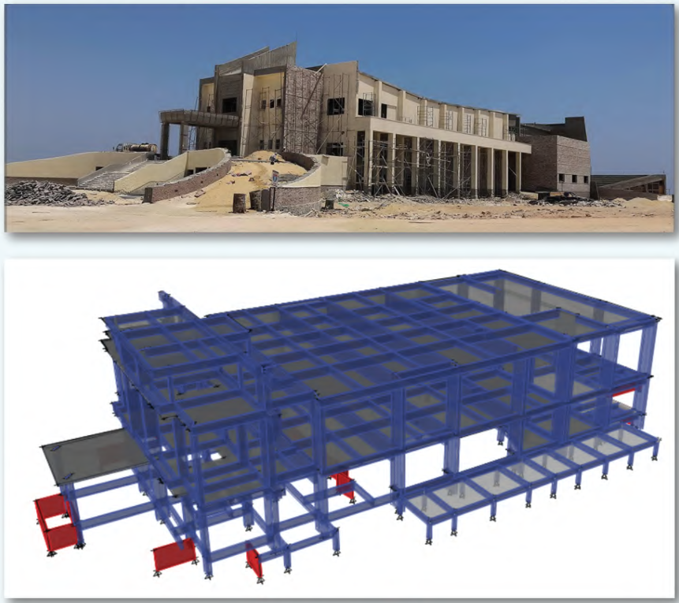
Structural engineering project involving design, shop-drawing review and structural modeling for a conference hall.
View details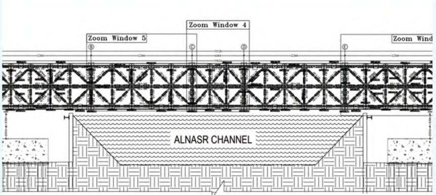
Temporary steel truss platform used to support construction works for a 60 m high-speed train bridge crossing El-Nasr Canal.
View details.PNG)
Development of an artificial canal in Jeddah with diaphragm retaining walls along the canal sides.
View details
Luxury residential and hospitality development comprising a main villa, clubhouse and Cova, Coralie and Bayou villa prototypes.
View details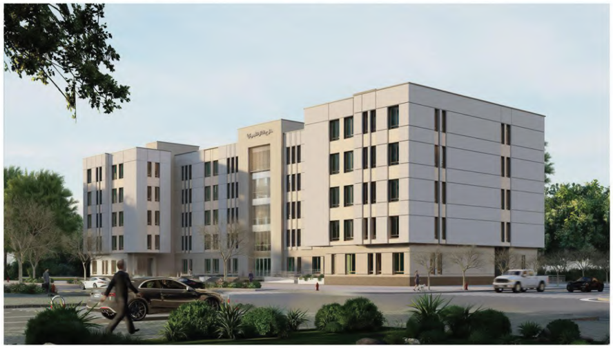
Development of four governmental service buildings: Main Gates, Secondary Gate, Administrative and Port Security buildings.
View detailsPortfolio note: 26 projects from the supplied CMC portfolio extract are listed here. Project years were checked against publicly available project/company sources where possible; where an exact CMC assignment period could not be verified, the card is marked Not publicly verified.